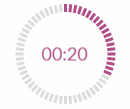
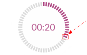

<div class="container-fluid">
  <div class="row">
    <div class="col-md-12 col-lg-3"  id="left-page">
      <h5>Technical design specification</h5>
      <p>This widget should have the following elements:</p>
        <dt>Countdown timer</dt>
        <dd>- should update every second and display actual remaining time.
          <br> The dashes around the timer should visualize the remaining seconds (from 60 to 0) and have two states:
          <br> - “<code>purple</code>”: the current second is within remaining time
          <br> - “<code>gray</code>”: the current second is out of remaining time
          <br> If more than 1 minute is remaining all dashes should have “purple” state When the time is over all dashes should
          have “grey” state.</dd>  
      
      <p>The timer should correspond to the following mockup:</p>
      
      
      <p>
        Additionally, the user should be able to change the remaining seconds on the timer view directly
         by pressing on the surrounding dash.
      </p>
      
      <dt>Form</dt>
      <dd>In the form user should be able to set the remaining time
         and update the remaining time while the timer is running.</dd>   

    </div>

    <div class="col-md-12 col-lg-6" id="right-page">
     <!-- <div class="application-area">  -->
      <div class="timer">
        <app-timer-clock #timerClock></app-timer-clock>

        <app-timer-form #timerForm></app-timer-form>
        
        <div class="col-md-offset-3 col-md-12">
          <button class="btn btn-default" name='startButton' [disabled]="startDisabled" (click)="start()">Start the timer</button>
        </div>

        <div class="col-md-offset-3 col-md-12">
          <button class="btn btn-default" name='pauseButton' [disabled]="pauseDisabled" (click)="pause()">{{pauseButton}}</button>
        </div>

        <div class="col-md-offset-3 col-md-12">
          <button class="btn btn-default" name='resetButton' [disabled]="resetDisabled" (click)="reset()">Reset the timer</button>
        </div>
        
      </div>

    <!-- </div> -->


    </div>

    <div class="col-md-12 col-lg-3" id="right-column">
      <h5>Technical details:</h5>
      <p>
        User also should be able to do the following actions: 
        <br> - Start the timer
        <br> - Pause the timer
        <br> - Reset the timer
        <br>
      </p>

      <p>
        When 10 or less than 10 seconds are left the time should start blinking.
      </p>

      <p>
        - The timer should change the color according to the browser window size:
        <br> - More than 1000x700 px: leave it “purple”
        <br> - Less than 1000x700 px but more than 500x300 px: change the color to “red”
        <br> - Less than 500x300 px: change the color to “blue”
      </p>

    </div>
  </div>
</div>